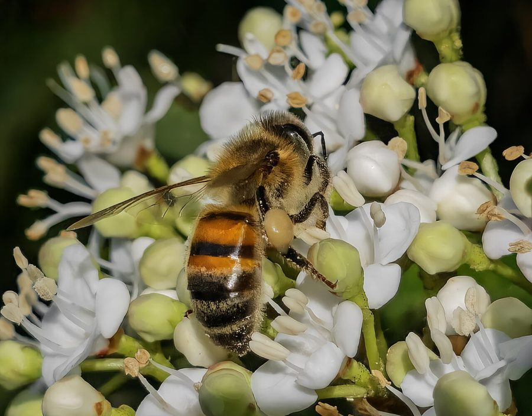

युरोपीय मधुमक्खीEuropean Honey Bee
Apis mellifera · Apidae · INS-0048

- Scientific name
- Apis mellifera Linnaeus, 1758
- Family
- Apidae
- Hindi
- युरोपीय मधुमक्खी
- Status here
- naturalized
- IUCN
- not evaluated
When to look कब देखें
Present all year.
युरोपीय मधुमक्खी / European Honey Bee
Apis mellifera Linnaeus, 1758 — Apidae
युरोपीय मधुमक्खी (पेट्टी मधुमक्खी / इटालियन मधुमक्खी) — पूर्वी उत्तर प्रदेश के कृषि क्षेत्रों, उद्यानों और व्यावसायिक मधुमक्खी पालन केंद्रों (apiaries) में व्यापक रूप से पाई जाने वाली एक अत्यंत महत्वपूर्ण, सामाजिक और आर्थिक रूप से उपयोगी कीट है। यह प्रजाति मूल रूप से यूरोप की निवासी है, जिसे भारत में व्यावसायिक शहद उत्पादन और फसलों के परागण (pollination) को बढ़ाने के लिए पेश किया गया था, और अब यह पूरी तरह से अभ्यस्त (naturalized) हो चुकी है। यह हमारे देशी छोटी मधुमक्खी (Asian Honey Bee - Apis cerana) से थोड़ी बड़ी और गहरे रंग की होती है। इसे लकड़ी के बक्सों (managed hive boxes) में पाला जाता है, हालांकि बक्सों से भागकर यह पेड़ों की खोह या दीवारों में जंगली छत्ते भी बना लेती है। यह फसलों के फूलों से मकरंद और पराग इकट्ठा करके शहद बनाती है।
Quick Identification त्वरित पहचान
| Feature | Description |
|---|---|
| Size | Worker is 12–15 mm long; larger and darker than the native Apis cerana; queen is 18–20 mm, drone is 15–17 mm |
| Colouration | Alternating dark brown and orange-yellow bands on the abdomen; abdomen is more pointed than Apis cerana |
| Hives | Kept in artificial wooden multi-tier boxes by beekeepers; feral nests are built in dark, enclosed cavities (not hanging in the open) |
| Pollen basket | Rear legs have a flat, shiny area surrounded by stiff hairs (corbicula) used to pack and carry pollen |
| Behaviour | Docile compared to wild honeybees; can be managed easily in high densities |
Field tip: Walk near a flowering mustard field in winter. Watch for medium-sized, orange-and-brown bees visiting the flowers. Look at their legs; you may see large, round packets of bright yellow pollen attached to their rear shins (pollen baskets). They are very docile and rarely sting unless squeezed. The worker is shown in the field tip.
Morphology आकारिकी
Biometrics (typical measurements of different castes in the northern Indian plains):
| Caste / Part | Worker | Queen | Drone |
|---|---|---|---|
| Body length | 12–15 mm | 18–20 mm | 15–17 mm |
| Forewing length | 9.0–9.5 mm | 9.5–10.0 mm | 11.5–12.0 mm |
| Abdomen width | 4.5–5.0 mm | 4.8–5.2 mm | 5.5–6.0 mm |
| Weight | 90–120 mg | 180–250 mg | 200–220 mg |
Caste structure and morphology:
- Worker (Females with undeveloped ovaries): The body is covered with fine, golden-brown hairs. The head and thorax are dark brown. The abdomen is banded with dark brown and light orange-yellow rings. The mouthparts are modified into a long tongue (proboscis) to suck nectar. The sting is barbed and is lost along with venom glands when used on mammals, causing the worker's death.
- Queen (Reproductive female): Much larger body, with a long, tapering abdomen extending past the wings. The legs lack pollen-carrying structures, and she lacks a wax gland. Her sting is smooth (not barbed), allowing her to sting multiple times.
- Drone (Reproductive males): Heavy-bodied, with very large compound eyes that touch at the top of the head. They lack a stinger and pollen baskets. Their wings cover the entire abdomen.
Behaviour & Ecology व्यवहार और पारिस्थितिकी
- Eusocial colony: Lives in highly organized colonies consisting of one queen, 20,000 to 60,000 workers, and a few hundred drones.
- Queen: Lays up to 1,500–2,000 eggs per day, controlling the hive through pheromones ("queen substance").
- Workers: Perform all hive duties, changing roles as they age (nurse bees clean cells and feed larvae, builder bees secrete wax and build comb, guard bees defend the entrance, and older foragers search for nectar and pollen).
- Drones: Have the sole role of mating with a virgin queen in flight.
- Waggle Dance: A highly advanced communication system. Foragers that find rich food sources return to the hive and perform a rhythmic dance on the vertical comb. The angle of the dance relative to gravity communicates the direction of the food relative to the sun, and the duration of the waggle run indicates the distance.
- Colony Collapse Disorder (CCD): Although less severe in India than in the West, managed hives are sensitive to CCD, which is caused by a combination of varroa mite parasites, pesticide exposure (neonicotinoids), and loss of diverse flower sources due to monoculture farming.
Life Cycle / Phenology जीवन चक्र
- Breeding: Breeds year-round, with peak colony growth during winter and spring when crops (mustard, coriander) are in full bloom.
- Developmental stages: Workers, queens, and drones develop from eggs laid in hexagonal wax cells.
- Larval phase: Eggs hatch in 3 days. Larvae are fed rich jelly (royal jelly) for the first 3 days, then switched to "bee bread" (honey and pollen mix) for workers and drones. Future queens are fed royal jelly exclusively throughout their larval stage.
- Pupal phase: Cells are sealed with wax covers. Pupal stage lasts: Queen (7.5 days), Worker (12 days), Drone (14.5 days).
- Developmental times (total from egg to adult):
- Queen: 16 days.
- Worker: 21 days.
- Drone: 24 days.
Host Plants or Prey आहार
Primary foraging crops:
- Winter oilseeds: Mustard (Brassica juncea) and sunflower.
- Winter crops: Coriander (Coriandrum sativum) and Chickpea.
- Trees: Eucalyptus, Neem, and Jamun.
Predators / Natural Enemies शत्रु
- Hornets: Predatory social wasps (such as the Greater Banded Hornet Vespa tropica) hover near hive entrances, capturing returning workers to feed their own larvae.
- Parasites: Varroa mites (Varroa destructor) parasitize pupae, causing deformed wings.
- Birds: Green Bee-eaters (Merops orientalis) capture flying bees on the wing.
Agricultural / Human Relevance कृषि प्रासंगिकता
Critical economic resource. The European Honey Bee is the backbone of the commercial honey industry in eastern UP. Millions of rupees of honey are harvested from migratory hives in the mustard belt. More importantly, they increase mustard, sunflower, and pulse crop yields by 20–40% through efficient pollination.
Conservation and legal status: As a naturalized, managed domestic insect, it is not scheduled under the Wildlife Protection Act, 1972. However, conservation efforts focus on reducing chemical insecticide sprays during crop flowering hours and supporting diverse floral borders near farms to maintain hive health.
Expected Locally स्थानीय रूप से अपेक्षित
Not a field record. Written from published accounts for eastern Uttar Pradesh. No confirmed local sighting yet — if you have seen it, that is what the atlas needs.
अभी तक स्थानीय पुष्टि नहीं। यह विवरण प्रकाशित स्रोतों से है, किसी अवलोकन से नहीं।
A common managed resident throughout the Basti district. Beekeepers set up rows of blue or yellow wooden hive boxes along field margins in the Harraiya, Basti, and Vikramjot blocks from November to February during the mustard bloom. Feral colonies are occasionally observed nesting inside hollow trunks of old mango trees.
Distribution वितरण
Global range: Native to Europe, western Asia, and Africa; introduced worldwide for agriculture.
In India: Managed in all agricultural states, particularly in the northern plains oilseed belts.
In Uttar Pradesh: Abundant in all agricultural plains.
In Basti district / eastern UP: Regularly recorded in all farming blocks during winter.
Research Questions शोध प्रश्न
Anyone can investigate these | कोई भी इन प्रश्नों की जाँच कर सकता है
- How many foraging trips does a single European Honey Bee make to mustard flowers in a ten-minute period? — Track and record individual visits.
- What is the ratio of pollen-carrying bees to nectar-carrying bees returning to a hive box at 10 AM versus 3 PM? / सुबह 10 बजे और दोपहर 3 बजे छत्ते के बक्से में लौटने वाली पराग-वाहक और मकरंद-वाहक मधुमक्खियों का अनुपात क्या है? — Conduct entrance counts.
- Do managed honey bees prefer foraging on Mustard flowers over Coriander flowers when both are in bloom? — Set up patch observation trials.
- How does the honey yield of a hive box change when located in a crop field using chemical pesticides versus organic farming? — Compare colony productivity.
- Does the presence of Greater Banded Hornets near the hive entrance reduce the number of honey bees leaving the box to forage? / क्या छत्ते के प्रवेश द्वार पर बड़े ततैया (Greater Banded Hornet) की उपस्थिति से बाहर जाने वाली मधुमक्खियों की संख्या कम हो जाती है? — Monitor foraging traffic under predation pressure.
Similar Species मिलती-जुलती प्रजातियाँ
| Species | How to tell apart | Identification Table |
|---|---|---|
| Asian Honey Bee (Apis cerana) | Smaller (10–12 mm); abdomen has very distinct, clean black-and-orange stripes; nests in tree hollows; native | देशी मधुमक्खी — छोटा आकार, गहरे काले पट्टे |
| Giant Honey Bee (Apis dorsata) | Much larger (17–20 mm); builds a single, massive comb hanging openly from tall buildings/cliffs; very aggressive | भंवर मधुमक्खी — बहुत बड़ा आकार, खुला विशाल छत्ता |
| Dwarf Honey Bee (Apis florea) | Very small (7–8 mm); abdomen has distinct red-brown base and white rings; builds tiny combs in low bushes | छोटी मधुमक्खी — अत्यंत छोटा आकार, लाल-भूरा पेट का आधार |
Field rule: Medium-sized honeybee (12–15 mm) with orange-brown abdomen bands, managed in wooden hive boxes, visiting agricultural flowers in large numbers, is the European Honey Bee.
Taxonomy & Classification वर्गीकरण
Original description. Carl Linnaeus described the European Honey Bee as Apis mellifera in 1758 in his Systema Naturae (ed. 10, vol. 1, p. 134). The type locality was Sweden. The genus name Apis is Latin for a bee. The specific name mellifera comes from the Latin mel (honey) and ferre (to bear/carry), meaning honey-bearing.
Subspecies. Over 30 subspecies are recognized. The subspecies extensively imported and bred in UP is:
| Subspecies | Authority | Range | Notes |
|---|---|---|---|
| A. m. ligurica | Spinola, 1806 | Native to Italy; introduced globally | UP subspecies; Italian Honey Bee; popular due to its high honey production and gentle behavior |
Family and order placement. Placed in the order Hymenoptera, suborder Apocrita, family Apidae (bees), subfamily Apinae, tribe Apini.
Phylogenetic notes. The genus Apis contains both cavity-nesting bees (like Apis mellifera and Apis cerana) and open-nesting bees, with cavity-nesting species showing high genetic adaptation to artificial hives.
IUCN status rationale. Not evaluated (NE) by the IUCN Red List globally. In Europe, it is assessed as Data Deficient (DD) or Endangered locally due to wild colony declines, but managed commercial populations remain secure.
Photo Gallery फोटो गैलरी
References संदर्भ
- Linnaeus, C. (1758). Systema Naturae. Tenth Edition. Holmiae, p. 134. [original description]
- Atwal, A. S. & Dhaliwal, G. S. (2015). Agricultural Pests of South Asia and Their Management. Kalyani Publishers, New Delhi.
- David, B. V. & Ramamurthy, V. V. (2016). Elements of Economic Entomology. Namrutha Publications, Chennai.
- Winston, M. L. (1987). The Biology of the Honey Bee. Harvard University Press, Cambridge.
- Michener, C. D. (2007). The Bees of the World. 2nd ed. Johns Hopkins University Press, Baltimore.
- GBIF Occurrence Data — Apis mellifera, Uttar Pradesh (2010–2025).
Source file: species/fauna/insects/european_honey_bee.md